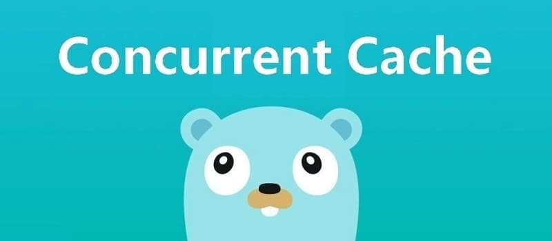

动手写分布式缓存 - GeeCache第二天 单机并发缓存
7天用 Go语言/golang 从零实现分布式缓存 GeeCache 教程(7 days implement golang distributed cache from scratch tutorial)，动手写分布式缓存，参照 groupcache 的实现。本文介绍了 sync.Mutex 互斥锁的使用，并发控制 LRU 缓存。实现 G…

本文是7天用Go从零实现分布式缓存GeeCache的第二篇。
- 介绍 sync.Mutex 互斥锁的使用，并实现 LRU 缓存的并发控制。
- 实现 GeeCache 核心数据结构 Group，缓存不存在时，调用回调函数获取源数据，代码约150行
1 sync.Mutex
多个协程(goroutine)同时读写同一个变量，在并发度较高的情况下，会发生冲突。确保一次只有一个协程(goroutine)可以访问该变量以避免冲突，这称之为互斥，互斥锁可以解决这个问题。
sync.Mutex 是一个互斥锁，可以由不同的协程加锁和解锁。
sync.Mutex 是 Go 语言标准库提供的一个互斥锁，当一个协程(goroutine)获得了这个锁的拥有权后，其它请求锁的协程(goroutine) 就会阻塞在 Lock() 方法的调用上，直到调用 Unlock() 锁被释放。
接下来举一个简单的例子，假设有10个并发的协程打印了同一个数字100，为了避免重复打印，实现了printOnce(num int) 函数，使用集合 set 记录已打印过的数字，如果数字已打印过，则不再打印。
var set = make(map[int]bool, 0)
func printOnce(num int) {
if _, exist := set[num]; !exist {
fmt.Println(num)
}
set[num] = true
}
func main() {
for i := 0; i < 10; i++ {
go printOnce(100)
}
time.Sleep(time.Second)
}
我们运行 go run . 会发生什么情况呢？
$ go run .
100
100
有时候打印 2 次，有时候打印 4 次，有时候还会触发 panic，因为对同一个数据结构set的访问冲突了。接下来用互斥锁的Lock()和Unlock() 方法将冲突的部分包裹起来：
var m sync.Mutex
var set = make(map[int]bool, 0)
func printOnce(num int) {
m.Lock()
if _, exist := set[num]; !exist {
fmt.Println(num)
}
set[num] = true
m.Unlock()
}
func main() {
for i := 0; i < 10; i++ {
go printOnce(100)
}
time.Sleep(time.Second)
}
$ go run .
100
相同的数字只会被打印一次。当一个协程调用了 Lock() 方法时，其他协程被阻塞了，直到Unlock()调用将锁释放。因此被包裹部分的代码就能够避免冲突，实现互斥。
Unlock()释放锁还有另外一种写法：
func printOnce(num int) {
m.Lock()
defer m.Unlock()
if _, exist := set[num]; !exist {
fmt.Println(num)
}
set[num] = true
}
2 支持并发读写
上一篇文章 GeeCache 第一天 实现了 LRU 缓存淘汰策略。接下来我们使用 sync.Mutex 封装 LRU 的几个方法，使之支持并发的读写。在这之前，我们抽象了一个只读数据结构 ByteView 用来表示缓存值，是 GeeCache 主要的数据结构之一。
day2-single-node/geecache/byteview.go - github
package geecache
// A ByteView holds an immutable view of bytes.
type ByteView struct {
b []byte
}
// Len returns the view's length
func (v ByteView) Len() int {
return len(v.b)
}
// ByteSlice returns a copy of the data as a byte slice.
func (v ByteView) ByteSlice() []byte {
return cloneBytes(v.b)
}
// String returns the data as a string, making a copy if necessary.
func (v ByteView) String() string {
return string(v.b)
}
func cloneBytes(b []byte) []byte {
c := make([]byte, len(b))
copy(c, b)
return c
}
- ByteView 只有一个数据成员，
b []byte，b 将会存储真实的缓存值。选择 byte 类型是为了能够支持任意的数据类型的存储，例如字符串、图片等。 - 实现
Len() int方法，我们在 lru.Cache 的实现中，要求被缓存对象必须实现 Value 接口，即Len() int方法，返回其所占的内存大小。 b是只读的，使用ByteSlice()方法返回一个拷贝，防止缓存值被外部程序修改。
接下来就可以为 lru.Cache 添加并发特性了。
day2-single-node/geecache/cache.go - github
package geecache
import (
"geecache/lru"
"sync"
)
type cache struct {
mu sync.Mutex
lru *lru.Cache
cacheBytes int64
}
func (c *cache) add(key string, value ByteView) {
c.mu.Lock()
defer c.mu.Unlock()
if c.lru == nil {
c.lru = lru.New(c.cacheBytes, nil)
}
c.lru.Add(key, value)
}
func (c *cache) get(key string) (value ByteView, ok bool) {
c.mu.Lock()
defer c.mu.Unlock()
if c.lru == nil {
return
}
if v, ok := c.lru.Get(key); ok {
return v.(ByteView), ok
}
return
}
cache.go的实现非常简单，实例化 lru，封装 get 和 add 方法，并添加互斥锁 mu。- 在
add方法中，判断了c.lru是否为 nil，如果等于 nil 再创建实例。这种方法称之为延迟初始化(Lazy Initialization)，一个对象的延迟初始化意味着该对象的创建将会延迟至第一次使用该对象时。主要用于提高性能，并减少程序内存要求。
3 主体结构 Group
Group 是 GeeCache 最核心的数据结构，负责与用户的交互，并且控制缓存值存储和获取的流程。
是
接收 key --> 检查是否被缓存 -----> 返回缓存值 ⑴
| 否 是
|-----> 是否应当从远程节点获取 -----> 与远程节点交互 --> 返回缓存值 ⑵
| 否
|-----> 调用`回调函数`，获取值并添加到缓存 --> 返回缓存值 ⑶
我们将在 geecache.go 中实现主体结构 Group，那么 GeeCache 的代码结构的雏形已经形成了。
geecache/
|--lru/
|--lru.go // lru 缓存淘汰策略
|--byteview.go // 缓存值的抽象与封装
|--cache.go // 并发控制
|--geecache.go // 负责与外部交互，控制缓存存储和获取的主流程
接下来我们将实现流程 ⑴ 和 ⑶，远程交互的部分后续再实现。
3.1 回调 Getter
我们思考一下，如果缓存不存在，应从数据源（文件，数据库等）获取数据并添加到缓存中。GeeCache 是否应该支持多种数据源的配置呢？不应该，一是数据源的种类太多，没办法一一实现；二是扩展性不好。如何从源头获取数据，应该是用户决定的事情，我们就把这件事交给用户好了。因此，我们设计了一个回调函数(callback)，在缓存不存在时，调用这个函数，得到源数据。
day2-single-node/geecache/geecache.go - github
// A Getter loads data for a key.
type Getter interface {
Get(key string) ([]byte, error)
}
// A GetterFunc implements Getter with a function.
type GetterFunc func(key string) ([]byte, error)
// Get implements Getter interface function
func (f GetterFunc) Get(key string) ([]byte, error) {
return f(key)
}
- 定义接口 Getter 和 回调函数
Get(key string)([]byte, error)，参数是 key，返回值是 []byte。 - 定义函数类型 GetterFunc，并实现 Getter 接口的
Get方法。 - 函数类型实现某一个接口，称之为接口型函数，方便使用者在调用时既能够传入函数作为参数，也能够传入实现了该接口的结构体作为参数。
了解接口型函数的使用场景，可以参考 Go 接口型函数的使用场景 - 7days-golang Q & A
我们可以写一个测试用例来保证回调函数能够正常工作。
func TestGetter(t *testing.T) {
var f Getter = GetterFunc(func(key string) ([]byte, error) {
return []byte(key), nil
})
expect := []byte("key")
if v, _ := f.Get("key"); !reflect.DeepEqual(v, expect) {
t.Errorf("callback failed")
}
}
- 在这个测试用例中，我们借助 GetterFunc 的类型转换，将一个匿名回调函数转换成了接口
f Getter。 - 调用该接口的方法
f.Get(key string)，实际上就是在调用匿名回调函数。
定义一个函数类型 F，并且实现接口 A 的方法，然后在这个方法中调用自己。这是 Go 语言中将其他函数（参数返回值定义与 F 一致）转换为接口 A 的常用技巧。
3.2 Group 的定义
接下来是最核心数据结构 Group 的定义：
day2-single-node/geecache/geecache.go - github
// A Group is a cache namespace and associated data loaded spread over
type Group struct {
name string
getter Getter
mainCache cache
}
var (
mu sync.RWMutex
groups = make(map[string]*Group)
)
// NewGroup create a new instance of Group
func NewGroup(name string, cacheBytes int64, getter Getter) *Group {
if getter == nil {
panic("nil Getter")
}
mu.Lock()
defer mu.Unlock()
g := &Group{
name: name,
getter: getter,
mainCache: cache{cacheBytes: cacheBytes},
}
groups[name] = g
return g
}
// GetGroup returns the named group previously created with NewGroup, or
// nil if there's no such group.
func GetGroup(name string) *Group {
mu.RLock()
g := groups[name]
mu.RUnlock()
return g
}
- 一个 Group 可以认为是一个缓存的命名空间，每个 Group 拥有一个唯一的名称
name。比如可以创建三个 Group，缓存学生的成绩命名为 scores，缓存学生信息的命名为 info，缓存学生课程的命名为 courses。 - 第二个属性是
getter Getter，即缓存未命中时获取源数据的回调(callback)。 - 第三个属性是
mainCache cache，即一开始实现的并发缓存。 - 构建函数
NewGroup用来实例化 Group，并且将 group 存储在全局变量groups中。 GetGroup用来特定名称的 Group，这里使用了只读锁RLock()，因为不涉及任何冲突变量的写操作。
3.3 Group 的 Get 方法
接下来是 GeeCache 最为核心的方法 Get：
// Get value for a key from cache
func (g *Group) Get(key string) (ByteView, error) {
if key == "" {
return ByteView{}, fmt.Errorf("key is required")
}
if v, ok := g.mainCache.get(key); ok {
log.Println("[GeeCache] hit")
return v, nil
}
return g.load(key)
}
func (g *Group) load(key string) (value ByteView, err error) {
return g.getLocally(key)
}
func (g *Group) getLocally(key string) (ByteView, error) {
bytes, err := g.getter.Get(key)
if err != nil {
return ByteView{}, err
}
value := ByteView{b: cloneBytes(bytes)}
g.populateCache(key, value)
return value, nil
}
func (g *Group) populateCache(key string, value ByteView) {
g.mainCache.add(key, value)
}
- Get 方法实现了上述所说的流程 ⑴ 和 ⑶。
- 流程 ⑴ ：从 mainCache 中查找缓存，如果存在则返回缓存值。
- 流程 ⑶ ：缓存不存在，则调用 load 方法，load 调用 getLocally（分布式场景下会调用 getFromPeer 从其他节点获取），getLocally 调用用户回调函数
g.getter.Get()获取源数据，并且将源数据添加到缓存 mainCache 中（通过 populateCache 方法）
至此，这一章节的单机并发缓存就已经完成了。
4 测试
可以写测试用例，也可以写 main 函数来测试这一章节实现的功能。那我们通过测试用例来看一下，如何使用我们实现的单机并发缓存吧。
首先，用一个 map 模拟耗时的数据库。
var db = map[string]string{
"Tom": "630",
"Jack": "589",
"Sam": "567",
}
创建 group 实例，并测试 Get 方法
func TestGet(t *testing.T) {
loadCounts := make(map[string]int, len(db))
gee := NewGroup("scores", 2<<10, GetterFunc(
func(key string) ([]byte, error) {
log.Println("[SlowDB] search key", key)
if v, ok := db[key]; ok {
if _, ok := loadCounts[key]; !ok {
loadCounts[key] = 0
}
loadCounts[key] += 1
return []byte(v), nil
}
return nil, fmt.Errorf("%s not exist", key)
}))
for k, v := range db {
if view, err := gee.Get(k); err != nil || view.String() != v {
t.Fatal("failed to get value of Tom")
} // load from callback function
if _, err := gee.Get(k); err != nil || loadCounts[k] > 1 {
t.Fatalf("cache %s miss", k)
} // cache hit
}
if view, err := gee.Get("unknown"); err == nil {
t.Fatalf("the value of unknow should be empty, but %s got", view)
}
}
- 在这个测试用例中，我们主要测试了 2 种情况
- 1）在缓存为空的情况下，能够通过回调函数获取到源数据。
- 2）在缓存已经存在的情况下，是否直接从缓存中获取，为了实现这一点，使用
loadCounts统计某个键调用回调函数的次数，如果次数大于1，则表示调用了多次回调函数，没有缓存。
测试结果如下：
$ go test -run TestGet
2020/02/11 22:07:31 [SlowDB] search key Sam
2020/02/11 22:07:31 [GeeCache] hit
2020/02/11 22:07:31 [SlowDB] search key Tom
2020/02/11 22:07:31 [GeeCache] hit
2020/02/11 22:07:31 [SlowDB] search key Jack
2020/02/11 22:07:31 [GeeCache] hit
2020/02/11 22:07:31 [SlowDB] search key unknown
PASS
ok geecache 0.008s
可以很清晰地看到，缓存为空时，调用了回调函数，第二次访问时，则直接从缓存中读取。
附 推荐阅读
白话复盘：从一个容器升级为可回源的并发缓存
三层结构分别负责什么
第二天的重点不是简单地给 LRU 加一把锁，而是把缓存访问整理成三层：
lru.Cache：只处理内存中的淘汰顺序，不知道数据来自哪里。cache：用互斥锁保护 LRU，给并发访问提供安全边界。Group：面向使用者提供Get(key)，缓存未命中时通过Getter去数据库、文件或其他慢速来源加载。
这种流程常被称为 read-through（读穿透）缓存：调用者只问 Group 要数据，不需要自己先查缓存、再查数据库、再回填。回源规则被统一收进框架。
一次 Get 怎样走
- 先拒绝空 key，避免没有意义的缓存项。
- 调用
mainCache.get，它在锁保护下查找 LRU。 - 命中就返回
ByteView；未命中则调用load。 load通过用户实现的Getter获取原始字节。- 复制字节后写入本机缓存，再把结果交给调用者。
GetterFunc 与 http.HandlerFunc 的思路相同：它让普通函数只要签名匹配就能实现接口，调用者既可以传结构体，也可以直接传闭包。
ByteView 为什么强调只读
Go 的 []byte 是对底层数组的视图。若缓存把内部切片直接交出去，调用者修改其中一个字节就等于偷偷改了缓存，其他请求会看到被污染的数据。ByteView 在进入或导出边界时复制数据，用额外分配换取不可变语义，让所有读者看到稳定值。
容易踩坑
- 不要在持有缓存互斥锁时执行数据库回源，否则一次慢查询会堵住所有 key；教程的锁只包住短暂的 LRU 操作。
- 这一版虽然线程安全，但多个请求同时 miss 同一个 key 时仍会重复回源，这个“缓存击穿”问题到第六天解决。
Group按名称放在全局表中，生产代码需要明确重复名称、生命周期和测试隔离策略。- 回源失败不能把空值当成成功结果写入缓存；错误应继续返回给调用者。
动手检查
让 Getter 递增一个计数器：第一次查询某 key 应调用 Getter，第二次应直接命中且计数不变。再启动多个 goroutine 读取不同 key，并用 go test -race 验证没有数据竞争。